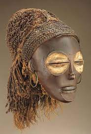

173. Female (Pwo) mask. Chokwe peoples (Democratic Republic of the Congo). Late 19th to early 20th century C.E. Wood, fiber, pigment, and metal
- Form
- Characteristics
- Enlarged eye sockets
- Pushed-in chin
- Slender nose
- High forehead
- Balanced features
- Almost-closed eyes
- Content
- Marks around the eyes may suggest tears; scarification marks including cosmogram on forehead
- White powder around the eyes connects the figure to a spiritual realm
- Function
- These are female masks used by men in ritual dances
- Male dancers are covered with their identities masked; they are dressed as women with braided hair
- During the ritual. men move like women
- Depicts female ancestors
- Content
- Chokwe, a matriarchal society
- The mask is discarded when not in use and can be buried with the dancer